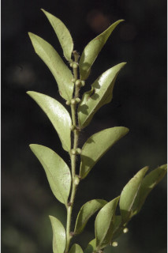
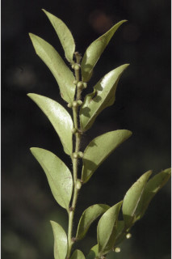

Trees up to 30 m tall.
30 ಮೀ ಎತ್ತರದವರೆಗೆ ಬೆಳೆಯುವ ಮರಗಳು.
30 മീറ്റര് വരെ ഉയരത്തില് വളരുന്ന മരങ്ങള്.
மரம் 30 மீ. உயரம் வரை வளரக்கூடியது.
Bark black, often flaky.
ತೊಗಟೆ ಕಪ್ಪು ಬಣ್ಣದಲ್ಲಿದ್ದು ಹಲವು ವೇಳೆ ಚಕ್ಕೆ ರೂಪದಲ್ಲಿರುತ್ತದೆ
മിക്കവാറും അടര്ന്നിളകുന്ന, കറുത്ത പുറംതൊലി.
மரத்தின் பட்டை கறுப்பு நிறமுடையது, வெடிப்புகளுடையது.
Young branchlets terete, densely covered by long hairs; young trees with verticillate branches.
ಎಳೆಯ ಕಿರುಕೊಂಬೆಗಳು ದುಂಡಾಗಿದ್ದು, ದಟ್ಟವಾದ ಹಾಗೂ ಉದ್ದವಾದ ರೋಮಗಳಿಂದ ಕೂಡಿರುತ್ತವೆ; ಎಳೆಯದಾದ ಮರಗಳಲ್ಲಿ ಕೊಂಬೆಗಳು ಸುತ್ತು ಜೋಡನಾ ವ್ಯವಸ್ತೆಯಲ್ಲಿರುತ್ತವೆ.
ഇളംഉപശാഖകള് ഉരുണ്ടതും, കനത്തില്, നീണ്ടരോമാവൃതവുമാണ്; ഇളം മരങ്ങള് വര്ത്തുള ക്രമത്തിലുള്ള ശാഖകളോട്കൂടിയതാണ്.
புதிய சிறிய நுனிக்கிளைகள் குறுக்குவெட்டுத் தோற்றத்தில் வளையமானது, அடர்த்தியான நீண்ட உரோமங்கள் சூழ்ந்திருக்கும்; சிறிய மரங்கள் வெர்டிசில்லேட் கிளைகளையுடையது.
Leaves simple, alternate, distichous; petiole 0.1 cm, subsessile; lamina to 2-4 x 1-1.5 cm, elliptic or elliptic-ovate, acute at both ends, chartaceous, yellowish silky hairy throughout when young, glabrous when mature, drying dark brown above pale brown beneath; midrib canaliculate above; secondary_nerves 3-5 pairs, not prominent; tertiary_nerves obscure.
ಎಲೆಗಳು ಸರಳವಾಗಿದ್ದು ಪರ್ಯಾಯ ಹಾಗೂ ಸುತ್ತು ಜೋಡನಾ ವ್ಯವಸ್ಥೆ ಯಲ್ಲಿದ್ದು ಕಾಂಡದ ಎರಡೂ ಕಡೆಯ ಎದುರು ಬದರಿನ ಸಾಲಿನಲ್ಲಿರುತ್ತವೆ; ಎಲೆ ತೊಟ್ಟುಗಳು ಉಪ-ತೊಟ್ಟು ರೀತಿಯಲ್ಲಿದ್ದು 0.1 ಸೆಂ.ಮೀ ಉದ್ದವಿರುತ್ತವೆ; ಪತ್ರಗಳು 2 - 4 X 1 –1. 5 ಸೆಂ.ಮೀ. ಗಾತ್ರ, ಅಂಡವೃತ್ತ ಅಥವಾ ಅಂಡವೃತ್ತ –ಅಂಡದ ಆಕಾರ ಚೂಪಾದ ತುದಿ, ಚೂಪಾದ ಬುಡ, ಕಾಗದವನ್ನೋಲುವ, ಮೇಲ್ಮೈ ಹೊಂದಿರುತ್ತವೆ; ಪತ್ರಗಳು ಎಳೆಯದ್ದಾಗಿದ್ದಾಗ ಹಳದಿ ಬಣ್ಣದ ರೇಷ್ಮೆಯಂತಹ ರೋಮಗಳನ್ನು ಎಲ್ಲೆಡೆ ಹೊಂದಿದ್ದು ಬಲಿತಾಗ ರೋಮರಹಿತವಾಗಿರುತ್ತವೆ, ಪತ್ರಗಳು ಒಣಗಿದಾಗ ಮೇಲ್ಭಾಗದಲ್ಲಿ ಕಡು ಕಂದು ಹಾಗೂ ತಳಭಾಗ ತೆಳು ಕಂದು ಬಣ್ಣ ಹೊಂದಿರುತ್ತವೆ; ಮಧ್ಯನಾಳ ಪತ್ರದ ಮೇಲ್ಭಾಗದಲ್ಲಿ ಕಾಲುವೆಗೆರೆ ಸಮೇತವಿರುತ್ತದೆ.; ಎರಡನೇ ದರ್ಜೆಯ ನಾಳಗಳು 3 – 5 ಜೋಡಿಗಳಿದ್ದು ಪ್ರಮುಖವಾಗಿರುವುದಿಲ್ಲ; ಮೂರನೇ ದರ್ಜೆಯ ನಾಳಗಳು ಅಸ್ಪಷ್ಟವಾಗಿರುತ್ತವೆ.
ലഘുവായ ഇലകള്, ഏകാന്തരമായി, തണ്ടിന്റെ രണ്ടുഭാഗത്ത് മാത്രം അടുക്കിയ വിധത്തിലാണ്; ഉപഅവൃന്ത, ഇലഞെട്ടിന് 0.1 സെ.മീ നീളം; പത്രഫലകത്തിന് 2 മുതല് 4 സെ.മീ വരെ നീളവും 1 സെ.മീ മുതല് 1.5 സെ.മീ വരെ വീതിയും, ദീര്ഘവൃത്തമോ അണ്ഡാകാരമോ ആണ്, രണ്ടഗ്രവും, നിശിതമാണ്, കടലാസ്പോലത്തെ പ്രകൃതം, ഇളതായിരിക്കുമ്പോള് മുഴുവനായും മഞ്ഞ സില്ക്ക്രോമങ്ങള് നിറഞ്ഞതാണ്, മൂക്കുമ്പോള് അരോമിലം, ഉണങ്ങുമ്പോള് മുകള്ഭാഗം ഇരുണ്ട തവിട്ട് നിറവും കീഴ്ഭാഗം നേര്ത്ത തവിട്ടുനിറവുമാണ്; മുഖ്യസിര മുകളില് ചാലോട് കൂടിയതാണ്; എറെ വ്യക്തമാര്ന്ന 3 മുതല് 5വരെ ജോഡി ദ്വിതീയ ഞരമ്പുകള്; ത്രിതീയ ഞരമ്പുകള് അപ്രസക്തമാണ്.
இலைகள் தனித்தவை, மாற்றுஅடுக்கமானவை, இருநெடுக்கு வரிசையிலையடுக்கம் (டைஸ்டிக்கஸ்); இலைக்காம்பு 0.1 செ.மீ. காம்பற்றவை; இலை அலகு 2-4 X 1-1.5 செ.மீ., நீள்வட்டம் அல்லது நீள்வட்டம்-முட்டை வடிவமுடையது, அலகின் தளம் மற்றும் மேற்பகுதியில் கூரியது, சார்ட்டேசியஸ், மஞ்சள் நிறமான பட்டு போன்ற உரோமங்கள் புதிய இலை முழுவதும் காணப்படும், முதிர்ந்த இலைகள் உரோமங்களற்றது, உலர்ந்த இலை மேற்பரப்பில் அடர்ந்த அரக்கு நிறத்துடனும் கீழ்பரப்பில் வெளிறிய அரக்கு நிறத்துடனும் காணப்படும்; மையநரம்பு மேற்பரப்பில் மேற்பரப்பில் அலகின் பரப்பைவிட பள்ளமானது; இரண்டாம் நிலை நரம்புகள் 3-5 ஜோடிகள், தெளிவற்றவை; மூன்றாம் நிலை நரம்புகள் தெளிவற்றவை, வலைப்பின்னல் அமைப்பு கொண்டது.
Flowers unisexual, dioecious; male flowers 1-4 together in small subsessile axillary cyme; female flowers solitary, axillary, subsessile.
ಹೂಗಳು ಏಕಲಿಂಗಿಗಳು ಗಂಡು ಮತ್ತು ಹೆಣ್ಣು ಹೂಗಳು ಪ್ರತ್ಯೇಕ ಸಸ್ಯಗಳಲ್ಲಿರುತ್ತವೆ; ಗಂಡು ಹೂಗಳು ಒಂದರಿಂದ ನಾಲ್ಕು ಜೊತೆಗಿದ್ದು, ಕಿರಿದಾದ, ಉಪ-ತೊಟ್ಟುಸಹಿತವಾದ, ಅಕ್ಷಾಕಂಕುಳಿನಲ್ಲಿನ ಮಧ್ಯಾರಂಭಿ ಪುಷ್ಪಮಂಜರಿಯಲ್ಲಿರುತ್ತವೆ;ಹೆಣ್ಣು ಹೂಗಳು ಉಪ-ತೊಟ್ಟು ಸಹಿತವಾಗಿದ್ದು,ಒಂಟಿಯಾಗಿ ಅಕ್ಷಾಕಂಕುಳಿನಲ್ಲಿರುತ್ತವೆ
പൂക്കള് എകലിംഗികളും ഡയീഷ്യസുമാണ്; ആണ്പൂക്കള് 1 മുതല് 4 എണ്ണംവരെ ഒന്നിച്ച് ചെറിയ, ഉപഅവൃന്ത കക്ഷ്യ സൈമുകളില് ഉണ്ടാകുന്നു; ഉപഅവൃന്ത പെണ്പൂക്കള്, കക്ഷങ്ങളില് ഒറ്റക്കായുണ്ടാകുന്നു.
ஓர் பால் மலர்கள்; ஈரகம் கொண்டவை; ஆண்மலர்கள் 1-4 கூட்டாக இலைக்கோணங்களில் காணப்படும் சைம்; பெண்மலர்கள் தனித்தவை, இலைக்கோணங்களில் காணப்படும், காம்பற்றவை.
Berry, oblong, to 1.4 cm long with persistent_calyx, 1 or 2-seeded.
ಬೆರ್ರಿಗಳು ಅಂದಾಜು 1.4 ಸೆಂಮೀ.ಉದ್ದವಿದ್ದು ದೃಢವಾದ ಪುಷ್ಪಪಾತ್ರೆ ಸಮೇತವಾಗಿರುತ್ತವೆ; ಬೀಜ ಒಂದು ಅಥವಾ ಎರಡು ಇರುತ್ತವೆ.
ഒന്നോരണ്ടോ വിത്തോടുകൂടിയ കായ, നിലനില്ക്കുന്ന ബാഹ്യദളത്തോടുകൂടിയ 1.4 സെ.മീ വരെ നീളമുളള, ആയതാകാര ബെറിയാണ്.
முழுச்சதைகனி (பெர்ரி) நீள்சதுரமானது, 1-4 செ.மீ. வரை நீளமானது மற்றும் நிரந்தரமான புல்லி இதழ்கள் கொண்டது, 1 அல்லது 2 விதைகளையுடையது.


 
